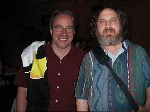

Présentation
Pour tester vos connaissances cliquez sur l'une de photos et essayez de répondre à la question posé
Ada LOVELACE  |
John VON NEUMANN |
Grace HOPPER  |
Alan TURING  |
Claude SHANNON  |
Frances ALLEN  |
Margaret HAMILTON  |
Dennis RITCHIE  |
Richard STALLMAN et Linus TORVALDS  |
Steve JOBS  |
Tim BERNERS-LEE |
Bill GATES  |
Mark ZUCKERBERG  |
Auteurs :
Leurs autres articles :